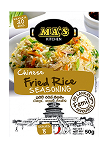
FRIED RICE SEASONING - 50G
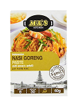
INDONESIAN NASI GORENG PASTE - 60G
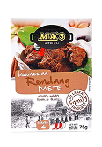
RENDANG CURRY PASTE - 75G
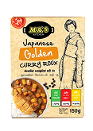
JAPANESE GOLDEN CURRY ROUX - 150G
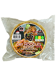
DRY NOODLES DISK - 400G
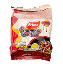
SHANGHAI FRIED NOODLES - 350G
Inspired by Japanese curry udon, this dish uses wide MA'S Flat Noodles to soak in the silky, spiced curry broth. Loaded with beef or tofu, carrots, and leeks, it's a soul-warming meal with depth and heartiness.
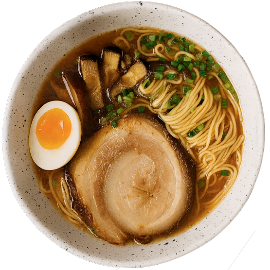
A comforting bowl of Japanese shoyu ramen, where light soy-flavoured broth meets springy flat noodles. Topped with egg, nori, and spring onions, it's a simple yet soul-warming meal.
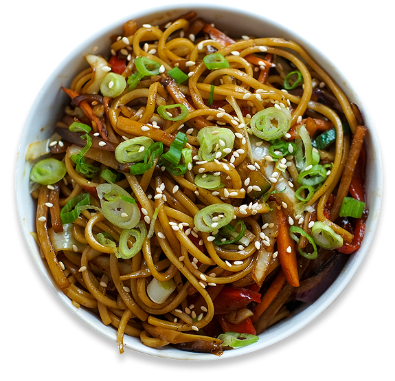
A hearty Japanese stir-fry where thick flat noodles are wok-tossed with tender meat, crisp veggies, and savoury sauces. A filling and flavourful street-style dish.

Thick udon noodles are stir-fried with mushrooms, cabbage, carrot and onion in a fragrant ginger-soy sauce. Glossy, savoury and packed with vegetables, it is a comforting Japanese-inspired noodle meal.
This Indonesian-style beef rendang is simmered slowly until the meat is tender and infused with layers of spices. The coconut milk reduces into a rich, caramelised sauce that clings to the beef, making it hearty and satisfying when paired with rice.
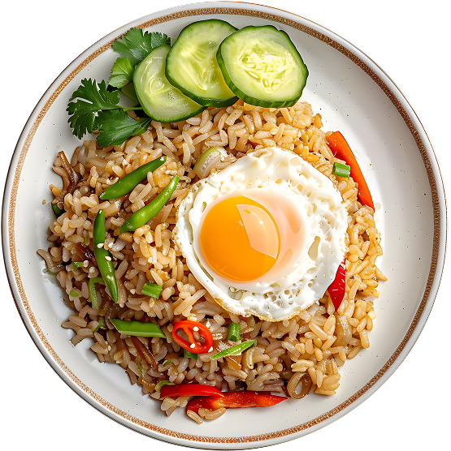
Indonesia's iconic fried rice comes alive with MA'S Nasi Goreng paste. Stir-fried with chicken, prawns, and a fried egg on top, this dish delivers smoky, savoury, and mildly spicy flavours, perfect for any time of the day.
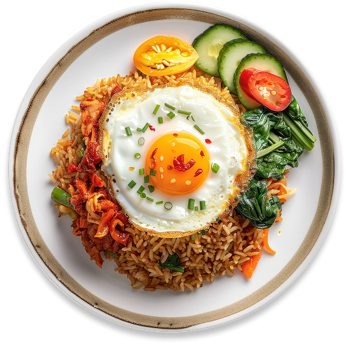
A quick and flavourful nasi goreng made with Keells' seasoning mix, giving a well-balanced Indonesian taste. Perfect for a fast yet satisfying meal, served with a fried egg and fresh garnishes.
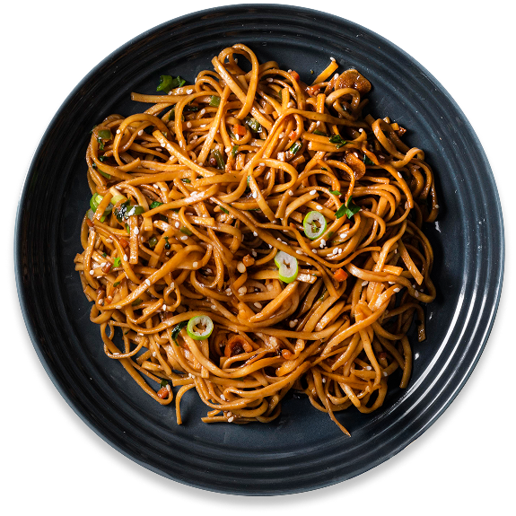
A Shanghai street classic, where chewy noodles are wok-tossed with tender pork, crisp vegetables, and a glossy, savoury soy-based sauce. Smoky, hearty, and full of authentic Chinese flavour.